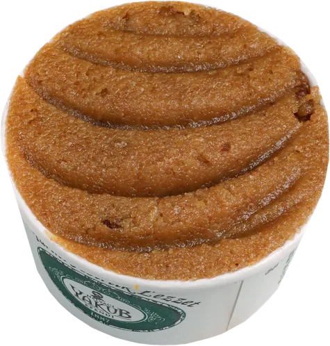
OriginalA, G
der Klassiker
mit Eis
Klein5,00 €
Groß7,50 €
ohne Eis: Klein 6,00 € · Groß 9,00 €
Original
Pur und klassisch: Grieß, in Butter goldbraun geröstet – so, wie Helva sein soll.
Tarihi Asırlık Lezzet
Ein jahrhundertealter Geschmack
Unsere Spezialität
Warm und buttrig – pur oder serviert auf türkischem Maraş-Eis.
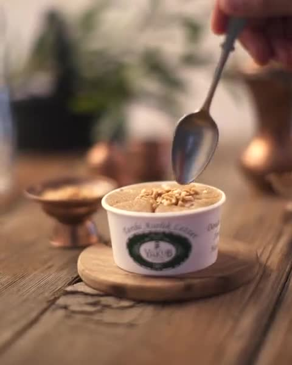
Was ist Helva?
Grieß wird langsam in Butter goldbraun geröstet und dann mit Zuckersirup oder Milch gegart. Heraus kommt eine warme, lockere Süßspeise – in der Türkei ein Klassiker zu jedem Anlass.
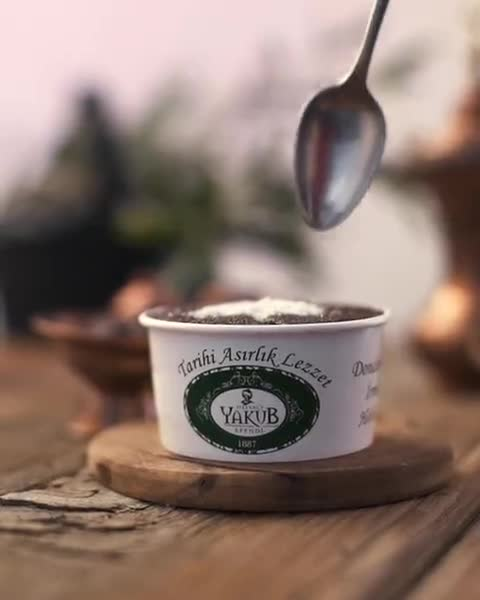
Was ist Maraş-Eis?
Traditionelles Eis aus Kahramanmaraş. Salep (Orchideenmehl) und Mastix machen es dicht und elastisch, deshalb schmilzt es langsamer. Zur warmen Helva ein herrlicher Kontrast aus heiß und kalt.

der Klassiker
mit Eis
ohne Eis: Klein 6,00 € · Groß 9,00 €
Original
Pur und klassisch: Grieß, in Butter goldbraun geröstet – so, wie Helva sein soll.
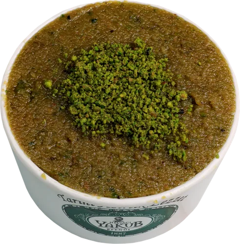
mit Pistazie
mit Eis
ohne Eis: Klein 7,90 € · Groß 12,00 €
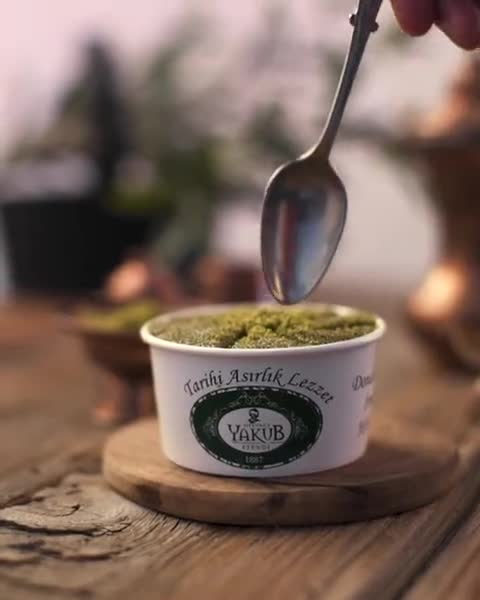
Pistazie
Mit fein gemahlener Pistazie: nussig im Geschmack und leuchtend grün.
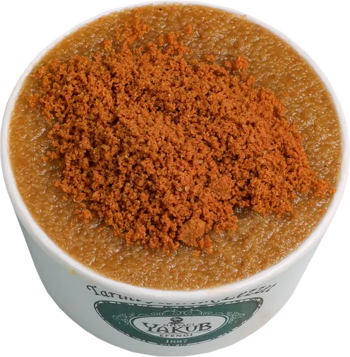
mit Karamellkeks
mit Eis
ohne Eis: Klein 6,50 € · Groß 9,50 €
Lotus
Mit Bröseln vom Lotus-Karamellkeks – karamellig, mit einer feinen Zimtnote.
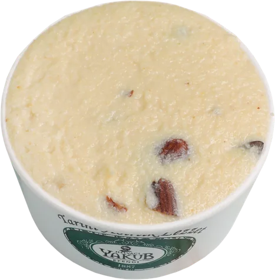
cremig, mit Mandelstücken
mit Eis
ohne Eis: Klein 6,50 € · Groß 9,50 €
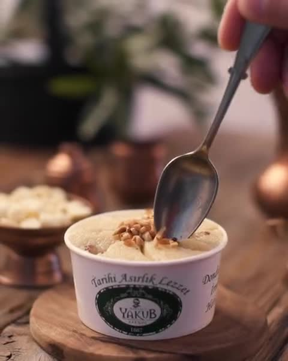
Weiße Schokolade
Mit weißer Schokolade und Mandelstücken verfeinert – besonders cremig und mild.
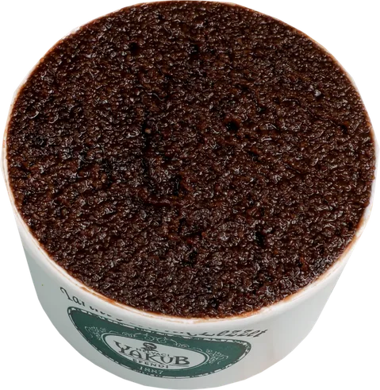
dunkel und intensiv
mit Eis
ohne Eis: Klein 6,50 € · Groß 9,50 €
Schokolade
Mit Schokolade – dunkel, intensiv und herrlich zum kalten Maraş-Eis.
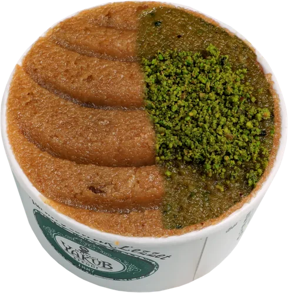
Original & Pistazie
mit Eis
ohne Eis: Klein 7,00 € · Groß 10,50 €
Mix
Halb Original, halb Pistazie – für alle, die sich nicht entscheiden wollen.
Süße Klassiker
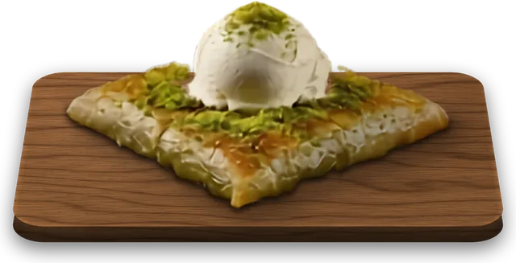
hauchdünner Teig mit warmer Pistazienfüllung
Katmer
Eine Spezialität aus Gaziantep: Der Teig wird hauchdünn ausgezogen, mit Pistazie gefüllt, gefaltet und kurz gebacken. Warm serviert – außen knusprig, innen saftig.
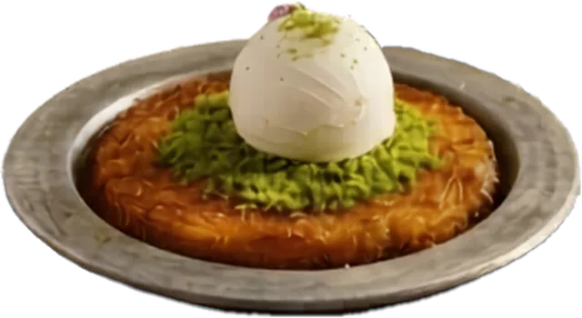
Engelshaar-Teig mit warmem Käse
Künefe
Feine Teigfäden (Kadayıf) mit mildem Käse, goldbraun gebacken und mit Sirup getränkt. Beim ersten Bissen zieht der Käse lange Fäden.
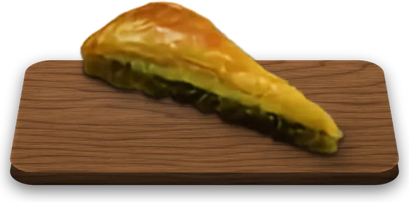
Pistazien-Dreieck · 1 Stück
Havuç Dilimi
„Karottenscheibe“ heißt dieses Baklava-Stück wegen seiner Form: viele hauchdünne Teigschichten, reichlich Pistazie und Sirup.
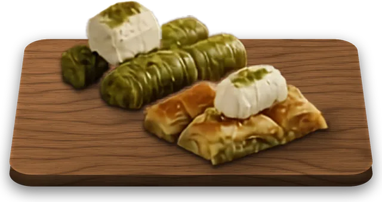
je 3 Stück
Baklava
Dünne Yufka-Teigblätter, Schicht für Schicht mit Nüssen gefüllt und mit Sirup getränkt. Bei der Pistazienrolle wird der Teig um die Pistazien gewickelt.
Auf Wunsch
Extra Eis – eine Kugel Maraş-Eis zu jedem DessertG
Baklava zum Mitnehmen · pro KiloA, G, H
Herzhaft
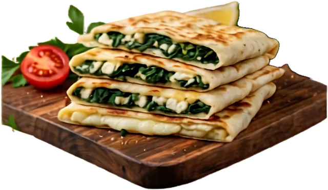
türkisches Fladenbrot, gefüllt
Gözleme
Hauchdünn ausgerollter Teig wird gefüllt, zusammengeklappt und auf der heißen Platte knusprig gebacken.
mit Oliven, Tomaten, Käse, Gurken und Tee
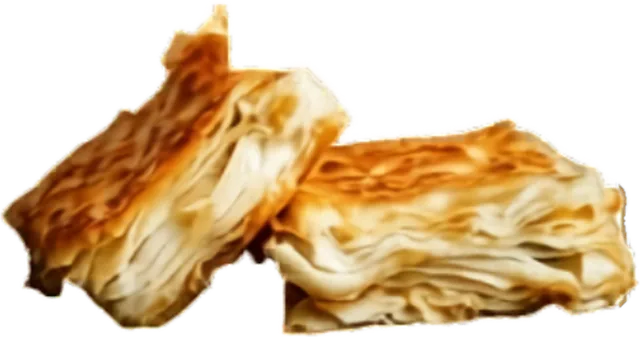
aus hauchdünnem Yufka-Teig
Börek
Viele Lagen hauchdünner Yufka-Teig, gefüllt und im Ofen goldbraun gebacken.
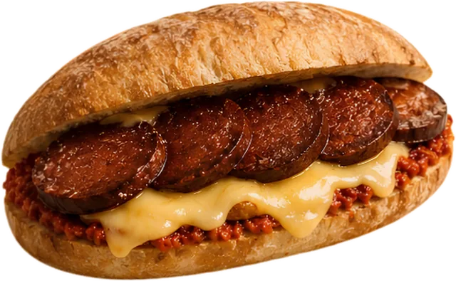
würzige türkische Knoblauchwurst
Sucuk & Käse
Sucuk ist eine kräftig gewürzte türkische Wurst mit Knoblauch und Paprika – warm im Brot, mit geschmolzenem Käse.
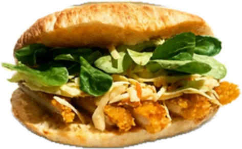
mit Hähnchen und Salat
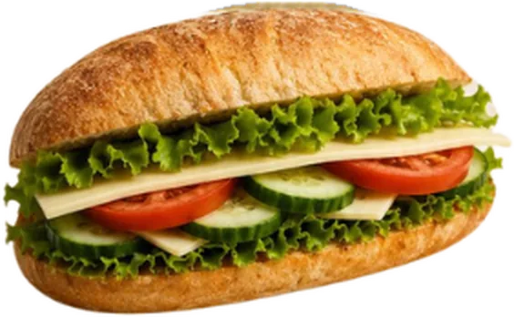
mit frischem Gemüse
Frisch aufgebrüht
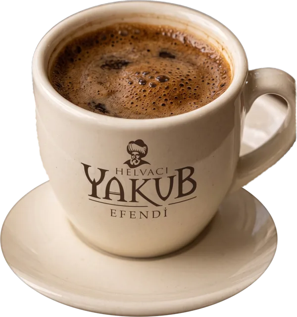
Türkischer Mokka
Sehr fein gemahlener Kaffee, im Kännchen (Cezve) aufgekocht und ungefiltert mit feinem Schaum serviert. Den Satz am Boden lässt man einfach stehen.
Osmanischer Mokka
Türkischer Kaffee nach osmanischer Art – mild und aromatisch, mit einer feinen Gewürznote.
Dibek Kaffee
Traditionell im Steinmörser (Dibek) gemahlen – milder und cremiger als klassischer türkischer Kaffee.
Menengiç Kaffee
Eigentlich kein Kaffee: geröstete Menengiç-Früchte (wilde Pistazie) – nussig, koffeinfrei und meist mit Milch zubereitet.
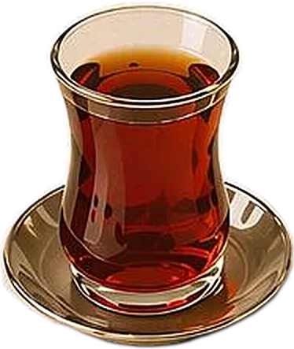
Çay
Türkischer Schwarztee – kräftig, klar und ohne Milch getrunken.
Frischer Minztee
Frische Minzblätter, heiß aufgegossen.
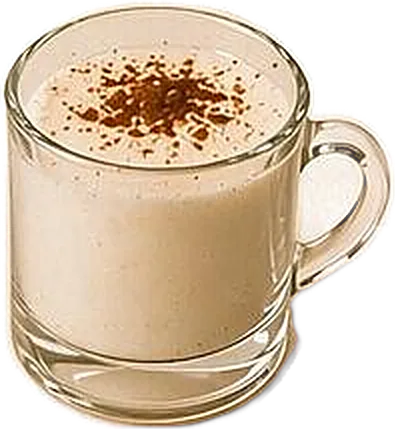
Salep
Heißes, cremiges Milchgetränk mit Salep (Orchideenmehl), mit Zimt bestäubt – ein türkischer Winterklassiker.
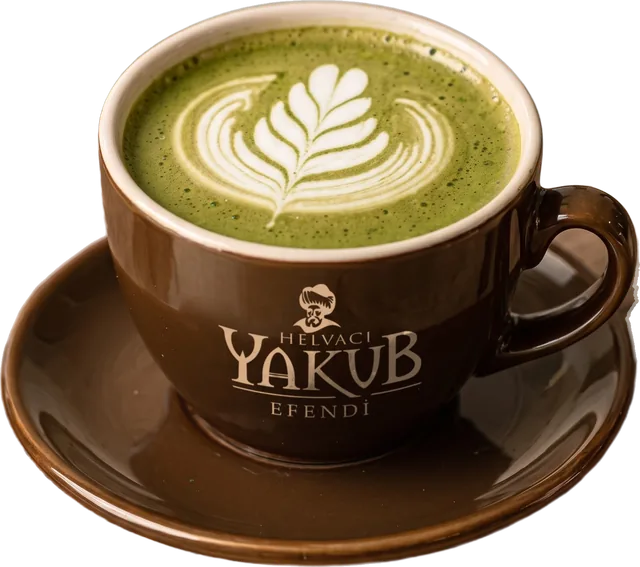
Matcha Latte
Fein gemahlener japanischer Grüntee, mit Milch aufgeschäumt – sanft und leicht herb.
Heiße Schokolade
Schokolade mit heißer, aufgeschäumter Milch – cremig und süß.
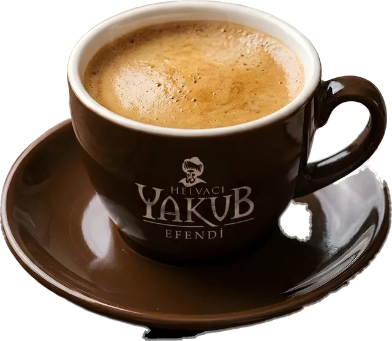
Café Creme
Langer, milder Kaffee mit feiner Crema.
Americano
Espresso, mit heißem Wasser verlängert.
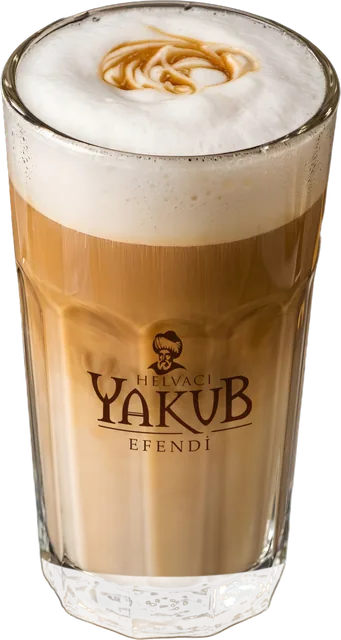
Latte Macchiato
Heiße Milch, Milchschaum und ein Espresso – im hohen Glas in drei Schichten.
Flat White
Doppelter Espresso mit samtigem, feinem Milchschaum – kräftiger als ein Cappuccino.
Doppio
Doppelter Espresso.
Espresso Macchiato
Espresso mit einem Häubchen Milchschaum.
Cortado
Espresso mit etwa gleich viel warmer Milch – kräftig, aber weich.
Eiskalt
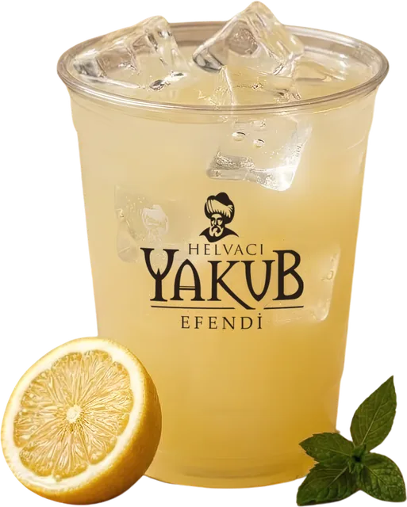
mit Zitrone und Minze
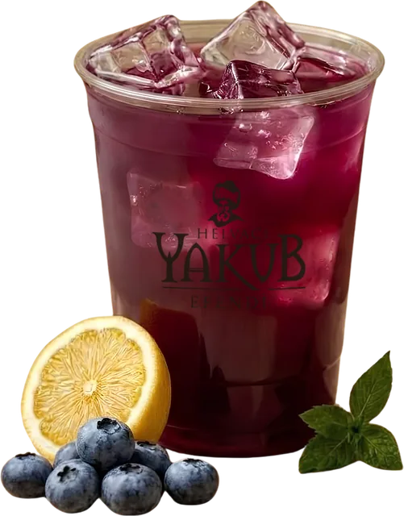
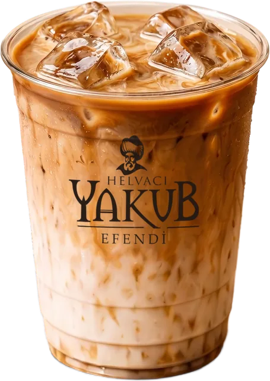
Espresso, kalte Milch, Eis
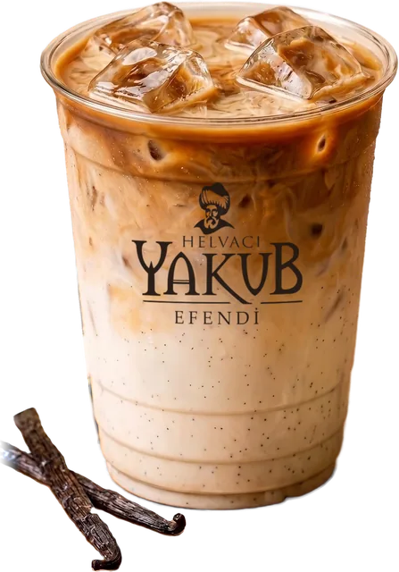
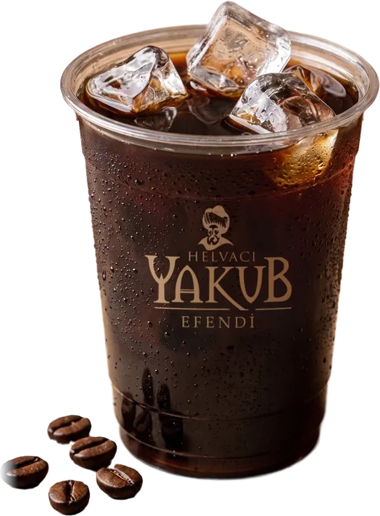
Espresso und Wasser auf Eis
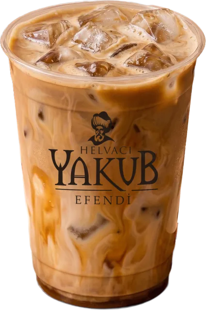
mit gesüßter Kondensmilch und Zimt
Iced Spanish Latte
Espresso mit gesüßter Kondensmilch, kalter Milch und Zimt auf Eis – süß, cremig und leicht würzig.
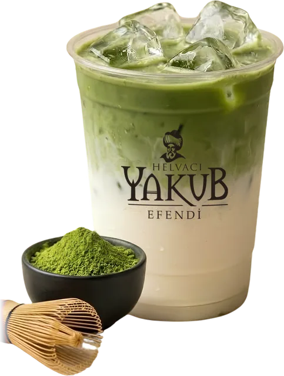
frisch aufgeschlagen
Iced Matcha Latte
Fein gemahlener japanischer Grüntee, frisch aufgeschlagen, mit kalter Milch auf Eis – sanft, leicht herb und mit natürlichem Koffein.
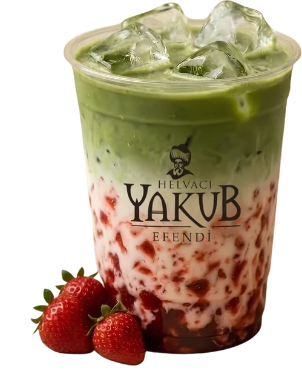
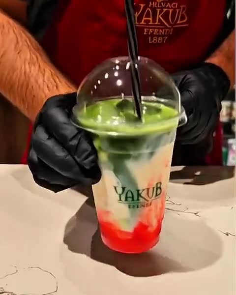
Iced Matcha mit Frucht
Erst die Frucht, dann Milch und Eis, obendrauf frisch aufgeschlagener Matcha. Vor dem Trinken umrühren!
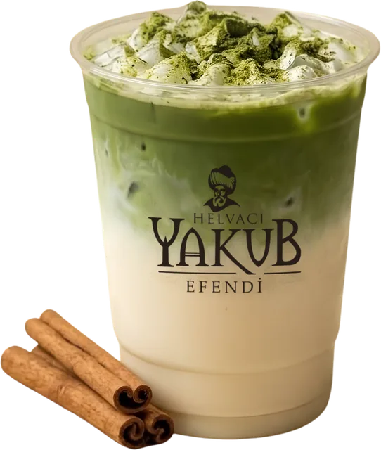
mit gesüßter Kondensmilch
Iced Spanish Matcha Latte
Matcha mit gesüßter Kondensmilch und kalter Milch auf Eis – süß, cremig und grün.
Milch nach Wahl
für Kaffee & Matcha